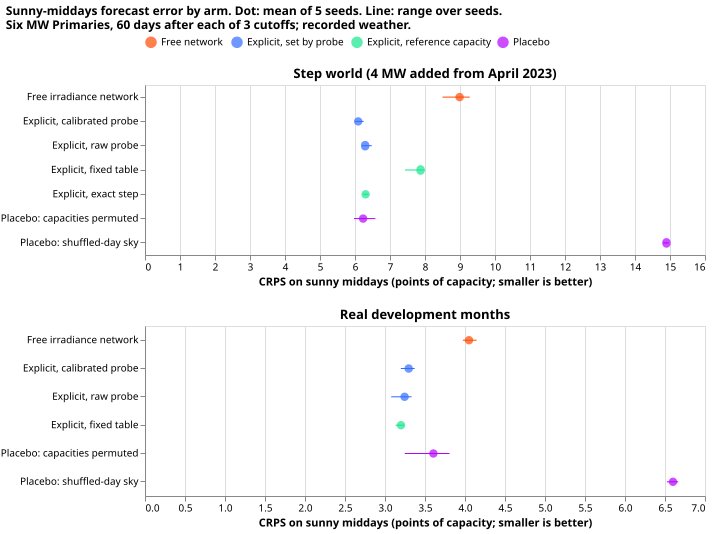
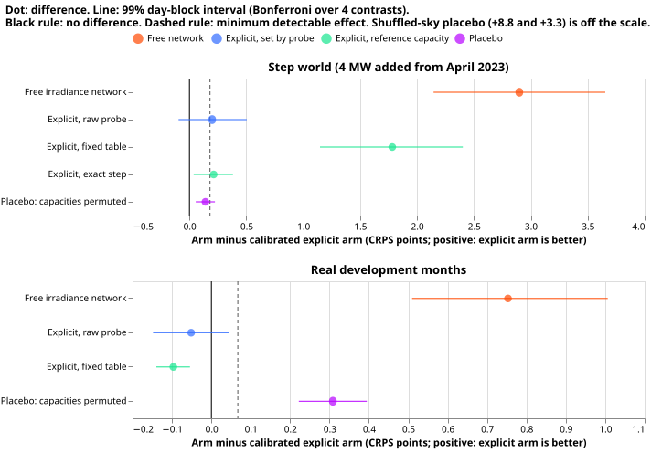
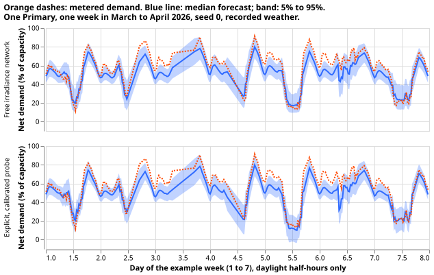

A physics solar term with a probed capacity forecasts sunny middays better, but mostly by fixing a bias
A demand neural network given a physics solar curve and a probed solar capacity forecasts sunny middays better than a neural network that learns the solar response from irradiance, but much of the gain is a bias in the free network, and the test does not show that each Primary's own capacity matters. The error measure is the continuous ranked probability score (CRPS), in percentage points of each Primary's effective capacity (smaller is better). Sunny middays are the half-hours from 10:00 to 15:00 UTC with a clear-sky index of at least 0.7.
We asked whether a demand neural network that is told how much solar capacity sits behind a Primary substation forecasts sunny middays better than one that learns the solar response from its irradiance inputs. The capacity comes from the probe of experiments 621, 623, and 638, which reads the capacity a trained network has learned by feeding it weather from other days. It is combined with the capacity table of experiment 474. We trained the networks on recorded weather (ERA5, from the European Centre for Medium-Range Weather Forecasts, and CAMS, from the Copernicus Atmosphere Monitoring Service) up to three cutoffs (July 2025, March 2026, and June 2026), and scored the 60 days after each, at the six Primaries metered in megawatts. We scored two worlds. In the real world the demand is the recorded demand. In the step world, 4 MW of a real solar farm's output has been added to the demand since April 2023.
On sunny middays the explicit network's CRPS was 3.30 against 4.05 for the free network in the real world, and 6.09 against 8.99 in the step world. A placebo that swapped the capacities between Primaries scored only 0.14 points worse than the explicit network in the step world. That is below the 0.18 points that the test can resolve. Two of the three pre-registered predictions hold: the gain in the step world, and no loss on the real months. The third holds for one of its two placebos: the shuffled-sky placebo loses clearly, and the capacity-swap placebo does not. The hypothesis is partly supported.

Definitions
- Free network: experiment 554's pretraining network (a mixture density neural network) on the net demand, which is demand with the solar generation netted off. It is the recipe of experiment 565, and it learns the solar response from its irradiance input. Seeds 0 to 2 are experiment 634's (real world) and 638's (step world); seeds 3 and 4 are trained here.
- Explicit network: the same neural network trained on gross demand, which is net demand plus a
physics solar curve (the curve for 1 MW) times a capacity timeline in megawatts. The forecast
subtracts the same term. The timeline is
k(a scale factor on experiment 474's table) times the table, plusD(the capacity step in megawatts, zero in the real world) from the step date, plus a trainable offset. Arms:cal(kandDread by the probe and divided by the leave-one-farm-out recovery factor of 0.67 to 0.69, the share of an injected farm's capacity the probe recovers),raw(as probed),r4(the table unchanged),oracle(the table plus exactly 4 MW from the step), and the placebosperm(the capacity timelines shifted by two Primaries) andshuf(the curve built from the weather of another date). - CRPS is pooled over test rows, with each row in percentage points of its Primary's effective capacity.
- Minimum detectable effect (MDE): the half-width of the interval of a null contrast, which is the free network's seeds {0, 2, 4} against {1, 3} (averaged over all ten 3-and-2 splits), at the same 98.75% level as the contrasts (95%, Bonferroni-corrected over four contrasts). It is 0.067 in the real world and 0.181 in the step world.
Results
The explicit network beats the free network by far more than the MDE. Each entry is the arm's
CRPS minus the cal arm's, so a positive value favours cal. Intervals are day-block bootstraps at
the 98.75% level.
Arm minus cal |
Real, sunny | Step, sunny |
|---|---|---|
free |
+0.75 [0.51, 1.01] | +2.90 [2.15, 3.65] |
raw |
-0.05 [-0.15, 0.05] | +0.20 [-0.10, 0.50] |
r4 (fixed table) |
-0.10 [-0.14, -0.05] | +1.78 [1.15, 2.40] |
oracle |
not run | +0.21 [0.04, 0.38] |
perm placebo |
+0.31 [0.22, 0.39] | +0.14 [0.06, 0.22] |
shuf placebo |
+3.30 [3.02, 3.58] | +8.81 [8.09, 9.61] |

- C1 holds. In the step world
freeminuscalis +2.90, above the MDE of 0.181, and 16 times the MDE. The MDE exceeds the 0.10 limit set in the plan, so the plan's predicted gain of 0.05 to 0.15 could not have been resolved. The prediction was also too low: the observed gain is 19 to 58 times the predicted one. - C2 holds. On all half-hours of the real months
calis 0.13 points better thanfree[0.08, 0.19], so it loses nothing. The windows cover March to August (the June 2026 window is 30 days). - C3 fails. The shuffled-sky placebo loses by 8.81. The capacity-swap placebo loses by 0.14 in the step world, below the MDE of 0.18, so the test does not show that each Primary's own capacity matters there. The injected 4 MW is the same at every Primary, so swapping the timelines changes only the table part. In the real world, which is outside the pre-registered C3, the swap loses 0.31, above the real-world MDE of 0.067, so the Primary's own capacity does help there.
- The best real-world arm is the fixed table.
r4beatscalby 0.10 in the real world. The best arm inbest_armis chosen in the step world, where the table has no step.rawandcaldiffer by 0.2 points or less, andrawdoes not beatcalby the MDE. - The probe's step. The raw probed step is 2.1 to 2.6 MW of the 4 MW injected (0.53 to 0.65 per injected megawatt), and the calibrated step is 3.2 to 3.8 MW (0.80 to 0.95). Per injected megawatt-hour, divide by the farm's energy share of 0.78 of the physics curve's (experiment 634's rows basis): the calibrated step is about 1.0 to 1.2 and the raw step about 0.7 to 0.8.
Checks
- The gain is mostly a bias in the real world. The free network's median forecast is too high on
sunny middays by 5.0, 4.2, and 2.7 points of capacity at the three cutoffs in the real world
(calibrated explicit network: 2.3, -0.4, 0.8), and by 7.7, 10.3, and 4.0 in the step world
(calibrated explicit network: 1.6, -2.6, 0.2). Shifting the free forecast by the free network's
own bias at each cutoff leaves
calahead by about 0.07 in the real world (the audit's figure). Shifting it by that bias at each cutoff and Primary, a correction available only in hindsight, makes the free network 0.52 better thancalin the real world and leavescal0.90 ahead in the step world. The free network is also overconfident (its 50% interval covers 38% to 49% of sunny rows), and in the step world its 5% to 95% width is about twice that ofcal. - The gain is uneven. By cutoff,
freeminuscalis +0.85, +0.89, and +0.27 (real), and +3.12, +3.73, and +0.48 (step). One of the six Primaries carries +3.05 (real) and +7.15 (step); two Primaries score slightly better withfreein the real world (-0.39 and -0.29). Without that Primary the real-world gain is still +0.27 on average. - Error of the median forecast beside CRPS. The mean absolute error of the median on sunny
middays is 5.81 (
free) against 4.44 (cal) in the real world, and 11.74 against 8.37 in the step world, in the same direction as the CRPS. The median minus the approximate mean (from the 11 quantiles) is -0.17 forfreeand 0.02 forcalin the real world, and -4.30 against -0.38 in the step world. - Triggers. An audit ran, with a private brief and report. The trigger "a gain after five
earlier nulls on the mean score" was explained as a bias, partly. The trigger "a nested arm beats
the arm that contains it" (
oracleloses tocal) has the energy-ratio explanation above, but regularisation by the random draws ofkandDeach epoch could also explain it, and these files cannot separate the two. The trigger "a later experiment depends on the sign" holds, and the result is unreplicated. The audit reproduced every headline CRPS with its own code, and found no lookahead and no unequal training between arms (free networks stopped after 30 to 54 epochs, explicit networks after 39 to 52). - Finding not applied. The audit asked for experiment 474's table for the one dominant Primary without later data. That was not run, because the table's own fit used the whole history, and Limits states this.

Limits
- Recorded weather, not forecasts. The weather is ERA5 and CAMS at the valid time, so this is a hindcast. A gain here does not show a gain for a forecast that uses ensemble weather forecasts.
- Short lead range. The rows have no forecast lead, so the 1 to 10 day range that the network operator (NGED) cares about is untested.
- Capacity table. Experiment 474's table was fitted on data that includes the test windows. The networks use only its season-years that ended before the cutoff, and hold the last value.
- What C1 tests. The free network has trained on two to three years of post-step rows, and
kandDcome from probing that same network, so the test shows the value of the explicit structure, not tracking of a capacity that appeared shortly before the cutoff. - The test windows. Three cutoffs cover 150 days from March to August, with 4,397 sunny rows pooled over six Primaries (the bootstrap resamples whole days). The shuffled-sky donor falls in the same 21-day block of the year, and a test row's input-spread columns use one lead band.
- Not reported. The plan listed one sunny and one cloudy example week, and a plot of all cutoffs. Only one example week is shown.
What the next experiment should answer
Does the gain survive ensemble weather forecasts and a free network shifted by its bias? Repeat the contrast with ensemble weather forecasts, include a free network shifted to the latest level after one refit month, and test a step that starts within 60 days of the cutoff.
Plan (pre-registered)
Standing practices followed and departed from
- Followed: cleaned data, the D15 and D18 cut, saved weights, reuse of stored networks, one paired contrast per question, and day-ahead and 14-day forecast plots (here one sunny week and one cloudy week instead, because the rows are hindcasts without leads).
- Departed from: monthly refits (one pretraining per cutoff, as in experiment 634); the load-shift slices (no event is injected); the screen on four test months (three cutoffs only, chosen below).
- Earlier advice followed: experiment 638 advises a step that starts in an ordinary spring
with more than half the donor rows after it, so the step world is its
spring23step. The placebo is the shuffled-day sky and the permutation of capacities, as the design review asks.
Worlds, networks, and arms
- Real world: experiment 634's
controlrows (no injection). Step world: thespring23step of experiment 638 (a real farm's output scaled to 4 MW added to the six MW Primaries' demand from 2023-04-01; farms A, B, C, F, A, B in order, anonymised by letter). - Network: experiment 554's
ModularMdnat stagepre, trained with experiment 634'strain. The free arm is that network on the net target. Every explicit arm trains the same network on the gross targety + C(t) * inc * u(t)(uis experiment 634's physics unit curve of the row's own CAMS-and-ERA5 weather,incthe inverse effective capacity of the Primary), and subtractsC(t) * inc * u(t)from each quantile at prediction. The shortwave input stays. - Capacity timeline.
C(t) = (k + e_k) * R4(season-year of t) + (D + e_D) * 1[t >= step] + delta.R4is experiment 474's table (ac_p50, per Primary and season-year).krescales the table to the probe's level: the probed capacity of the free real-world network (median over seeds) divided byR4at season-year 2025, clipped to 0.5 to 1.5.Dis the probed capacity of the free step-world network minus that of the free real-world network, floored at zero, and zero in the real world.e_kande_Dare drawn once per epoch from a normal distribution whose relative spread is the quadrature sum of the seed spread, the bootstrap spread, the factor spread, and 0.04 for the spread of the factor between farms.deltais a trainable offset per Primary with a normal prior of 0.25 MW. - Arms.
free: the free arm.cal:kandDdivided by the leave-one-farm-out factor of experiment 638 (0.67 to 0.69).raw:kandDas probed.r4: the fixed table,k = 1,D = 0.oracle: the table withD= 4 MW exactly (step world only; a ceiling, not a contrast).perm: thecaltimelines of the six Primaries cyclically shifted by two.shuf: thecaltimeline withubuilt from the weather of another date. The date is drawn within the same Primary, the same half-hour of the day, and the same 21-day block of the year.
Scoring and contrasts
- Test rows: the 60 days after each cutoff (the pretraining rows end 3.5 hours before it), so every test row postdates training. Targets include the step from 2023-04-01. Sunny half-hours: 10:00 to 15:00 UTC with a CAMS clear-sky index of at least 0.7.
- C1:
freeminuscal, step world, sunny middays. C2:freeminuscal, real world, all half-hours; support needscalto lose at most 0.02. C3a, C3b:permminuscalandshufminuscal, step world, sunny middays. Also reported without a bar:rawandr4againstcal,oracleagainstcal, the contrasts in the real world, and the same contrasts on all half-hours. - Seeds and intervals: seeds 0 to 4, day-block bootstrap over test days with 2000 resamples. The MDE is defined in the decision rule.
- Probe reads in two units: the probed step per injected megawatt and per injected megawatt-hour over the probe dates, using experiment 634's farm-to-curve energy ratios.
- Stop: if C1 fails, the write-up reports that and no version with ensemble weather forecasts is planned.
Changes after the plan review
- Table lookahead. Experiment 474's R4 table was fitted on the whole history. Each explicit network uses only season-years that ended before its cutoff (2024 and earlier at all three cutoffs, because a season-year ends in June) and holds the last value for later dates. The table's own fit still saw later months, so the write-up states this as a caveat.
- What C1 tests. The free network has trained on two to three years of post-step rows, and
kandDcome from probing that same network. C1 therefore tests whether an explicit term built from the probed level forecasts at least as well as the network's own implicit level. It does not test tracking of a capacity that appeared shortly before the cutoff, and the write-up says so. A late-step world is not part of this plan. - Calibrated or raw. Dividing by the factor may overstate the PV energy, because the real farm
carries 0.72 to 0.84 of the unit curve's energy. All of
raw,cal, andoracleare reported on sunny middays, with each arm's implied PV energy against the injected energy. Ifrawbeatscal, the write-up namesrawas the better explicit arm, and C1 and C3 are repeated for it. - Minimum detectable effect. The null contrast and its split are computed and printed before any explicit network is fitted, at the same confidence level as the contrasts. If it exceeds 0.10 points, C1 is reported as unable to resolve the predicted gain.
- Training detail. Explicit networks standardise the gross target with the net target's mean
and standard deviation. The offset
deltaenters the gross target and trains by gradient. Validation for early stopping uses the mean capacity (no draw) with the currentdelta. The loop is experiment 634'strainwith that change only. Seeds 3 and 4 of the free networks use experiment 634'strainunchanged. - Test rows. A new builder takes experiment 448's pretraining rows with the valid-time filter moved to the test window. It keeps one row per Primary and valid time (the first origin), excludes no purged week (the rows postdate training), and applies experiment 634's farm-gap mask. The free and explicit arms score the same rows.
- Definitions. A sunny half-hour has
x[:, 0](the shortwave column) divided by the Haurwitz clear-sky value at least 0.7. Pooling weights every test row equally, in points of that Primary's effective capacity. C2 covers March to August only, so it says nothing about winter. Thepermplacebo shifts the table and the step increment together, and theshufplacebo is a sanity check.
Review order
A fresh Sonnet agent reviews the code before the first fit. A fresh Sonnet agent reviews the
write-up against the printed report, and a second runs the prose review. An audit follows if a
trigger in the ml-experiment skill fires (for example, a nested arm beating the arm that
contains it, or a placebo that does not lose).